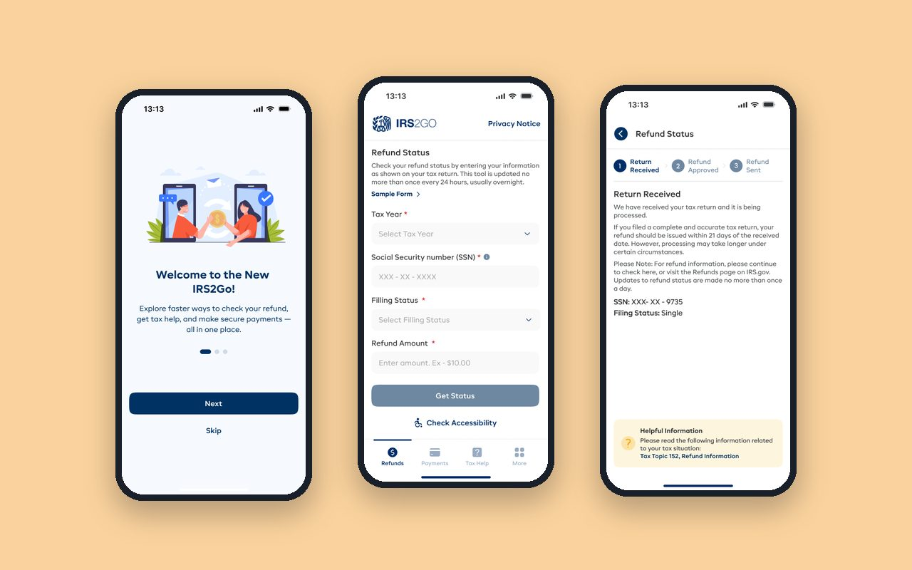
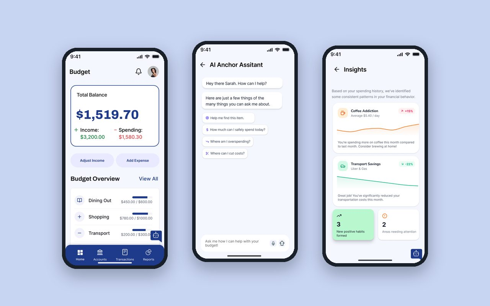
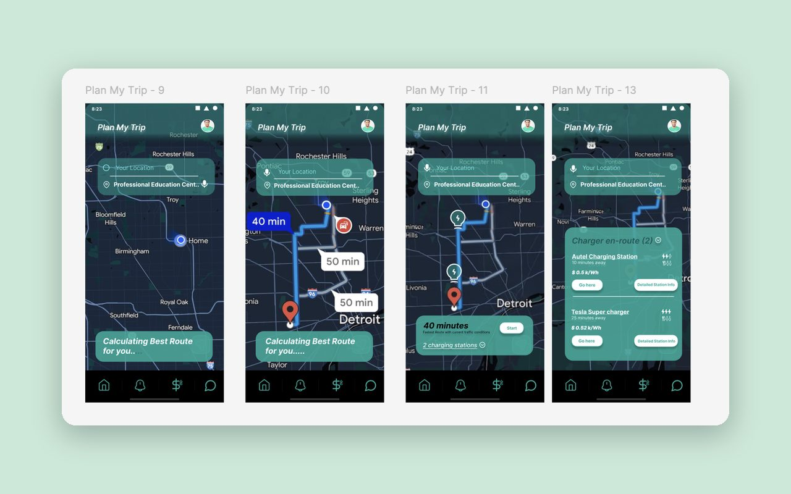

Shipped · B2B2C retail · 3 min read
One front door for customers and staff
27% fewer user errors
From the storefront shoppers use to the tools staff run it with. Research first, and I can build what I design.
I started as an engineer, building websites in HTML, CSS and JavaScript. At Jai Hind Group, I designed a retail chain's public website and the order platform its staff use. Then I earned my master's in Human-Centered Design and Engineering at the University of Michigan-Dearborn.
I care about the quiet stuff: clear labels, readable color, and the one button you actually need.
Each one walks through the process step by step, with the key decisions, the thinking behind them, and the results.
Shipped · B2B2C retail · 3 min read
27% fewer user errors

Shipped · B2B manufacturer · 3 min read
50+ product pages kept accurate
Internship · Startup, New York · 2 min read
"Consistently raised the quality of everything she touched."

Course project · Government app · 4 min read
31.3 → 78.25 usability score

Capstone · Fintech, AI · 4 min read
75% completely trusted the AI

Course project · Mobility · 4 min read
78.75 usability score, 10 testers
Weekly design critiques for 30+ students.
Grew the design system and designed features inside the sprint.
Graduated in 2026.
A retail chain's website and its order platform, which cut user errors 27%.
Built and kept up a B2B catalog website.
Where the engineer part started.
"Siddhi brought a rare mix of curiosity and rigor to our team."
Open to product design roles in B2B and e-commerce, across the US.